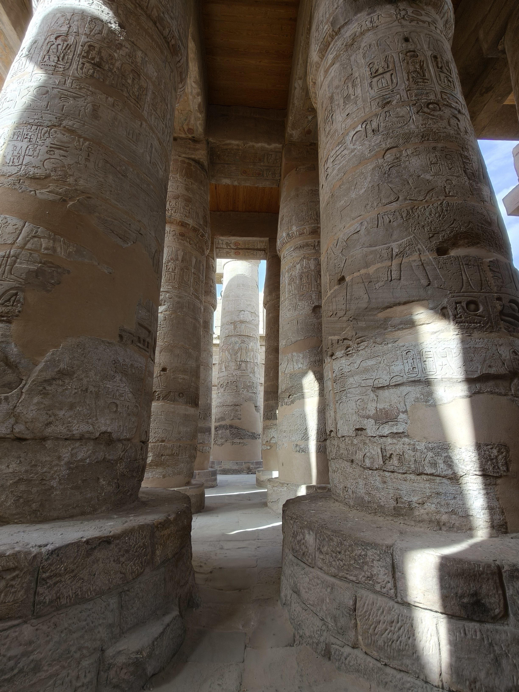

★ Incontournable
Karnak — Le Temple des Temples
Le complexe religieux le plus vaste du monde antique — 2 km² de temples, pylônes, obélisques et chapelles construits sur 2 000 ans par une trentaine de pharaons. L'allée des sphinx criocéphales mène à la salle hypostyle avec ses 134 colonnes colossales de 23 mètres, ornées de hiéroglyphes sur chaque centimètre. Le lac sacré est serein. La visite de nuit (son et lumière) est très populaire. Comptez au moins 2h–3h pour la visite.